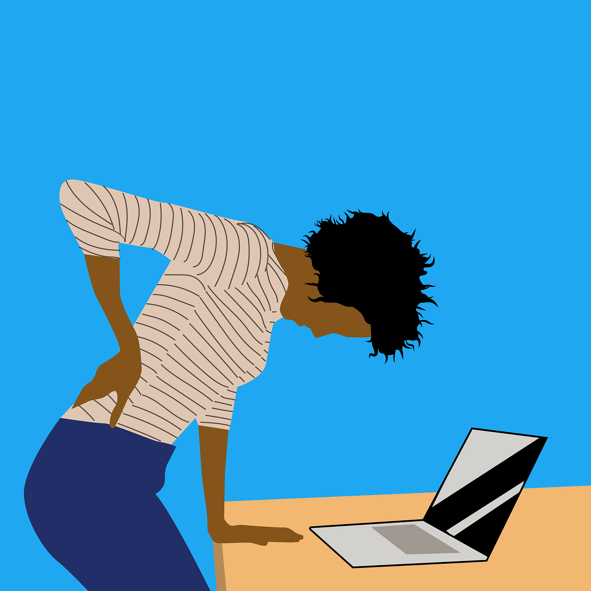

La Rehabilitación Física.
¿Qué es la Rehabilitación Física?

La Rehabilitación Física es la disciplina que se encarga de sanar y
recuperar al máximo todas las capacidades motrices de un individuo que
ha sido afectado por una lesión o enfermedad. Todo esto con el
objetivo de que este pueda reintegrarse a sus actividades rutinarias y
pueda ser autónomo.
Tipos de Rehabilitación Física
Existen categorías secundarias que permiten ocuparse de diversas
condiciones físicas de una manera más eficiente y apropiada para el
paciente. A continuación, te hablaremos de algunas de estas:

-
Neurológica:
Enfermedades y condiciones neurológicas desfavorables conducen a
la debilidad muscular extrema. Al punto de imposibilitar el
balance o la coordinación.
-
Musculoesquelética:
Trata sobre la recuperación o reparación de las deformidades o
dolencias relacionadas con el sistema musculoesquelético del ser
humano.
-
Cardiopulmonar:
Se especializa en el tratamiento de enfermedades que tienen que
ver con Desórdenes Cardiopulmonares, tales como los Fallos
Cardiacos y las Obstrucciones Pulmonares Crónicas.
-
Pediátrica:
Esta se enfoca en ayudar a reparar y sanar daños agudos o defectos
que se presentan en infantes a la hora del nacimiento o en su
desarrollo, por ejemplo: el crecimiento demorado y defectos
genéticos relacionados con la psiquis cerebral y el movimiento,
tales como la Parálisis.
¿Cuándo asistir a Rehabilitación Física?
Todas las personas cuyo ritmo de vida laboral les demande pasar mucho
tiempo sentados frente a una computadora, son candidatos potenciales.

Las posturas forzadas provocan lesiones por repetición. Esto quiere
decir que por pasarse un día entero sentado, lo más probable es que no
sufran consecuencias de nada, en cambio, después de meses o incluso
semanas, muy probablemente comenzarán a presentar molestias. De igual
manera, si el paciente fue sometido anteriormente en alguna cirugía o
alguna Reconstrucción Avanzada.